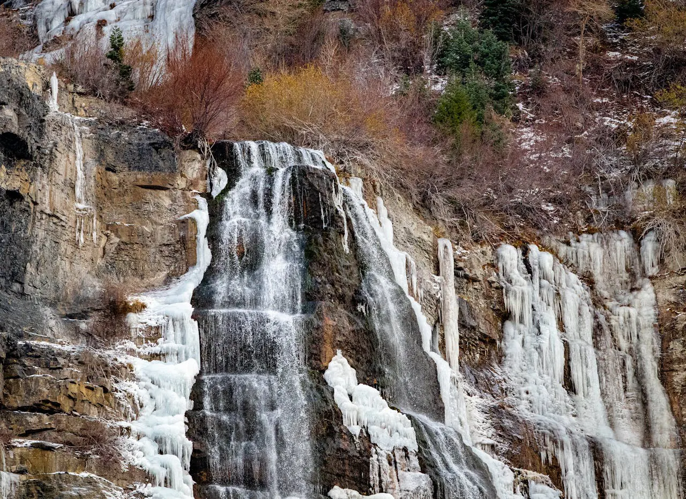

Pedal Cycle Provo - -
Welcome to Pedal Cycle Provo. This site is dedicated to introducing cycling enthusiasts to the vibrant cycling culture of Provo, Utah. Here, you will find essential information about local laws, safety precautions, and the best trails for both leisure cycling and mountain biking. Our goal is to ensure that every cyclist can pedal safely and legally while enjoying the beautiful landscapes of Provo.
